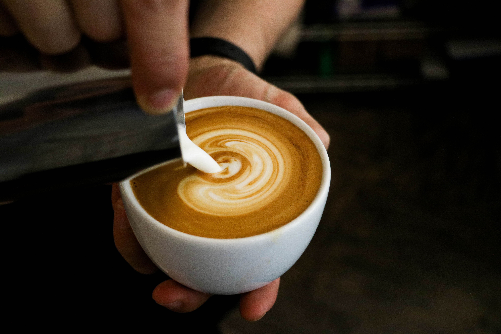

Rich in antioxidant
Coffee shows more antioxidant activity than green tea and cocoa, two antioxidant superstars. Scientists have identified approximately 1,000 antioxidants in unprocessed coffee beans, and hundreds more develop during the roasting process. Numerous studies have cited coffee as a major dietary source of antioxidants for its subjects.
What is antioxidants?
Antioxidants fight inflammation, an underlying cause of many chronic conditions, including arthritis, atherosclerosis, and many types of cancer. They also neutralize free radicals, which occur naturally as a part of everyday metabolic functions, but which can cause oxidative stress that leads to chronic disease. In other words, antioxidants help keep us healthy at the micro-level by protecting our cells from damage. Finally, chlorogenic acid, an important antioxidant found almost exclusively in coffee, is also thought to help prevent cardiovascular disease.
Memory boosting
Caffeine appears to affect the particular areas of the brain responsible for memory and concentration, providing a boost to short-term memory, although it’s not clear how long the effect lasts or how it may vary from person to person.
Also help prevent cognitive decline, Alzheimer’s disease
caffeine prevents the buildup of beta-amyloid plaque that may contribute to the onset and progression of Alzheimer’s. Researchers also theorize that because coffee drinking may be associated with a decreased risk of type 2 diabetes, a risk factor for dementia, it also lowers the risk for developing dementia.
Reduce anxiety
The UK NHS advises that avoiding coffee may reduce anxiety. Caffeine, the primary active ingredient in coffee, is associated with stress. At high doses, typically greater than 300 mg, caffeine can both cause and worsen anxiety. For some people, discontinuing caffeine use can significantly reduce anxiety. Caffeine-induced anxiety disorder is a subclass of substance- or medication-induced anxiety disorder. Populations that may be most impacted by caffeine consumption are adolescents and those already suffering anxiety disorders. Preliminary research indicated the possibility of a beneficial relationship between coffee intake and reduced depression. Long-term preliminary research, including assessment of symptoms for dementia and cognitive impairment, was inconclusive for coffee affecting the elderly, mainly due to the poor quality of the studies.
Enhance exercise performance.
Caffeine is a performance and endurance enhancer; not only does it fight fatigue, but it also strengthens muscle contraction, reduces the exerciser’s perception of pain, and increases fatty acids in the blood, which supports endurance.
Prevent gout
Independent studies on the coffee consumption patterns of men and women suggest that drinking coffee regularly can help reduces the risk of developing gout. Researchers in the Nurses’ Health Study analyzed the health habits of nearly 90,000 female nurses over a period of 26 years and found a positive correlation between long-term coffee consumption and a decreased risk for gout. The benefit was associated with both regular and decaf consumption. Women who drank more than four cups of regular coffee daily had a 57 percent decreased risk of gout. Gout risk fell 22 percent in women who drank between one and three cups daily. One cup of decaf per day was associated with a 23 percent reduced risk of gout when compared to the women who didn’t drink coffee at all. Another study found that men who drank four to five cups of coffee per day decreased their risk of gout by 40 percent. Those who consumed six cups or more lowered gout risk by 60 percent.
Prevent cardiovascular disease
Moderate coffee consumption is not a risk factor for coronary heart disease. A 2012 meta-analysis concluded that people who drank moderate amounts of coffee had a lower rate of heart failure, with the most significant effect found for those who drank more than four cups a day. A 2014 meta-analysis concluded that cardiovascular disease, such as coronary artery disease and stroke, is less likely with three to five cups of non-decaffeinated coffee per day, but more likely with over five cups per day. A 2016 meta-analysis showed that coffee consumption was associated with a reduced risk of death in patients who have had a myocardial infarction.
Drink more coffee does not guarantee better health
Insomnia
Consuming caffeine later in the day can interfere with sleep. People with high sensitivity would experience nervousness and gastrointestinal upset.
Headache
Caffeine consumption causes blood vessels to narrow, reducing or stopping intake allows blood vessels to open up and increases blood flow to the brain.
Addictiveness
People who is addictive to caffeine would experience serveral coffeine withdral effects such as headache, stressness, anxiety and fatigue. It is important to monitor the intake level and exercise is encouraged to increase body's metabolism rates.
Reference
“Coffee.” Wikipedia, Wikimedia Foundation, 18 Oct. 2019, en.wikipedia.org/wiki/Coffee#cite_note-pmid18707777-156.
Jiang-nanWuae, et al. “Coffee Consumption and Risk of Coronary Heart Diseases: A Meta-Analysis of 21 Prospective Cohort Studies.” International Journal of Cardiology, Elsevier, 15 Aug. 2008, www.sciencedirect.com/science/article/pii/S0167527308008498?via%3Dihub.
Jong, Nikki. “10 Healthy Reasons to Drink Coffee.” One Medical, 12 Sept. 2017, www.onemedical.com/blog/newsworthy/10-healthy-reasons-to-drink-coffee-2/.
Kubala, Jillian. “8 Symptoms of Caffeine Withdrawal.” Healthline, Healthline Media, 24 Apr. 2018, www.healthline.com/nutrition/caffeine-withdrawal-symptoms#section2.